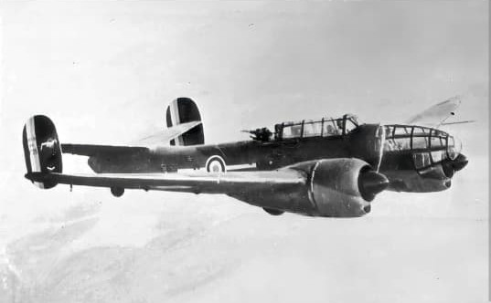

Cette fiche présente un avion de reconnaissance rapide français de la fin de l’entre‑deux‑guerres, conçu pour répondre à la doctrine française de reconnaissance stratégique à haute vitesse. Les informations ci‑dessous sont exposées dans un cadre strictement historique et documentaire, conformément aux exigences muséales de neutralité et de contextualisation.
Le Bloch MB.174 est l’un des appareils les plus modernes mis en service en 1940 : bimoteur puissant, silhouette profilée, train rentrant et performances supérieures à la majorité des avions de reconnaissance européens de la même période. Sa vitesse élevée lui permet souvent d’échapper aux chasseurs ennemis, faisant de lui un outil essentiel pour l’observation stratégique durant la campagne de France.
Le Bloch MB.174 est l’un des avions français les plus performants de 1940. Conçu pour la reconnaissance stratégique, il est capable de voler plus vite que la plupart des chasseurs allemands de l’époque, ce qui lui permet de pénétrer profondément les lignes ennemies et d’en revenir.
Sa vitesse exceptionnelle, son autonomie et sa robustesse en font un appareil très apprécié des équipages, malgré les conditions difficiles de la campagne de France.

Le MB.174 possède une silhouette très moderne : fuselage fin, cockpit avancé, moteurs profilés et train rentrant. Sa vitesse élevée provient de son aérodynamisme soigné et de ses moteurs puissants.
Le MB.174 est utilisé pour des missions de reconnaissance stratégique : observation des mouvements de troupes, repérage des colonnes blindées, photographie aérienne et surveillance des ponts et axes logistiques.
Page du Musée HOP WW2 – Section reconnaissance